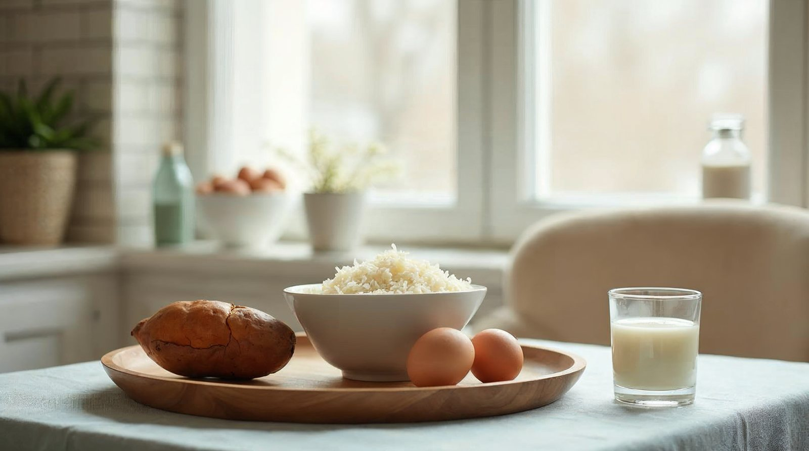

이종호 한의사 감수좋은꿈참사랑한의원 대표원장 (한의사 면허번호 19769)발행 2026-11-26 · 수정 2026-11-26
이 글의 차례
식당에서 친구들과 밥을 먹습니다. 다들 "너는 많이 먹어도 안 찌니 좋겠다"고 웃습니다. 그 말을 들으며 함께 웃지만, 속으로는 조금 서운합니다. 사실은 한 공기를 다 먹기도 버겁고, 조금만 더 먹으면 속이 더부룩해 오후 내내 힘들다는 걸 아무도 모르니까요.
진료실에서 체중을 늘리고 싶다는 말씀을 꺼내시는 분들은 생각보다 많습니다. 다만 살을 빼고 싶다는 고민보다 겉으로 말하기 어려워하십니다. 부러움을 사는 고민처럼 들릴까 봐, 혹은 투정처럼 보일까 봐 오래 혼자 품고 지내신 경우가 많습니다.
마른 체질로 고민하시는 분들은 대개 비슷한 이야기를 하십니다. 많이 먹으려고 애쓰면 소화가 먼저 탈이 나고, 조금만 무리해도 쉽게 지치고, 겨울이면 손발이 유난히 차갑다고요. 체중이라는 숫자 하나에 여러 가지 불편이 함께 엮여 있습니다.
그래서 저는 체중을 늘리는 일을 많이 먹는 일로만 보지 않습니다. 잘 먹고, 잘 싸고, 잘 자고, 마음 편하고, 몸 따뜻하게, 이 다섯 가지를 몸이 회복하는 바탕으로 보기 때문입니다.
먹은 것을 잘 소화하고, 그 힘으로 근육을 지키고, 잠으로 회복하는 흐름 전체를 함께 살펴야 체중도 따라오기 쉽습니다. 이 글에서는 그 흐름을 하나씩 짚어 보겠습니다.

저체중은 어떻게 판단하나요
흔히 키와 체중으로 계산하는 체질량지수를 기준으로 삼습니다. 이 숫자가 18.5보다 낮으면 저체중으로 봅니다. 다만 숫자 하나만으로 건강하다, 아니다를 나누기는 어렵습니다.
체질량지수가 낮더라도 근육이 충분하고 잘 먹고 잘 자며 지치지 않는 분이 있습니다. 반대로 숫자는 기준 안에 있어도 근육이 적고 쉽게 피곤하며 소화가 늘 불편한 분도 있습니다. 그래서 진료실에서는 숫자와 함께 몸이 실제로 어떤지를 나란히 봅니다.
가장 중요한 것은 변화입니다. 원래 마른 체형으로 오래 지내 온 분과, 최근 몇 달 사이에 체중이 눈에 띄게 줄어든 분은 살펴야 할 방향이 전혀 다릅니다. 뒤쪽이라면 먼저 원인을 확인하는 검사가 필요할 수 있습니다.
왜 먹어도 살이 붙지 않을까요
마른 체질이라고 해도 이유는 사람마다 다릅니다. 많이 먹는다고 생각하지만 실제로는 양이 적은 경우도 있고, 먹는 양은 충분한데 소화와 흡수가 따라오지 못하는 경우도 있습니다.
- 조금만 먹어도 배가 불러 한 끼 양이 적은 경우
- 먹고 나면 더부룩하거나 묽은 변을 자주 보는 경우
- 끼니를 거르거나 시각이 들쭉날쭉한 경우
- 긴장이 많아 식욕이 쉽게 떨어지는 경우
- 잠이 짧거나 자주 깨서 회복이 더딘 경우
- 활동량에 비해 먹는 양이 따라가지 못하는 경우
이 가운데 한 끼 양이 적은 것은 스스로 알아차리기 어렵습니다. "저 정말 많이 먹어요"라고 하시는 분의 하루 식사를 적어 보면, 한 끼는 넉넉하지만 다른 끼니는 거르거나 간단히 때우는 경우가 많습니다. 하루 전체로 보면 생각보다 양이 적은 것입니다.
또 하나는 긴장입니다. 걱정이 많거나 늘 쫓기듯 지내는 분은 몸이 쉬는 쪽으로 넘어가지 못해 소화가 더디고, 입맛도 쉽게 떨어집니다. 시험이나 큰일을 앞두고 체중이 쑥 빠지는 경험이 있으시다면 이쪽을 함께 살펴볼 필요가 있습니다.
체질과 가족력은 어디까지 영향을 줄까요
부모님이나 형제가 모두 마른 편이라면 체형도 어느 정도 닮을 수 있습니다. 한의학에서도 타고난 바탕을 중요하게 봅니다. 타고난 소화의 힘이나 몸의 열과 냉기에 따라 같은 음식을 먹어도 몸에 남는 방식이 다르다고 봅니다.
하지만 타고난 바탕이 전부는 아닙니다. 같은 체질이라도 끼니 리듬, 잠, 근육을 쓰는 습관에 따라 체중과 컨디션은 꽤 달라집니다. 그래서 체질은 방향을 잡는 참고로 삼고, 실제로 바꿀 수 있는 생활을 함께 찾는 쪽을 권합니다.
체중보다 근육이 먼저입니다
체중을 늘리고 싶다는 분께 저는 지방보다 근육을 먼저 생각하시라고 말씀드립니다. 단것과 기름진 음식으로 체중을 올리면 숫자는 늘 수 있지만, 배만 나오고 몸은 여전히 쉽게 지치는 경우가 많습니다.
근육은 몸을 받치고, 체온을 지키고, 에너지를 저장하는 창고 역할을 합니다. 근육이 늘면 체중도 함께 늘고, 쉽게 지치던 몸이 조금씩 버티는 힘을 갖게 됩니다. 그래서 먹는 것과 함께 근육을 쓰는 움직임을 꼭 짝지어 가시기를 권합니다.
근력 운동이라고 해서 처음부터 헬스장에 갈 필요는 없습니다. 의자에 앉았다 일어나기, 벽 짚고 팔굽혀 펴기, 계단 천천히 오르기처럼 집에서 할 수 있는 동작부터 시작해도 됩니다. 운동 뒤에는 단백질이 들어간 간식을 함께 챙겨 주세요. 처음 몇 주는 근육이 뻐근할 수 있으니 횟수는 적게 시작해 조금씩 늘려 가시면 됩니다.
식욕부진이나 소화불량과는 어떻게 다른가요
마른 체질은 원래부터 체형이 가늘고 체중이 잘 늘지 않는 상태를 말합니다. 입맛은 있는데 양이 적거나, 먹어도 몸에 잘 붙지 않는다고 느끼시는 경우가 많습니다.
식욕부진은 원래 잘 드시던 분이 어느 시기부터 입맛이 떨어지고 밥이 넘어가지 않는 상태입니다. 우울감, 긴장, 다른 병, 드시는 약이 원인이 되기도 해서, 언제부터 입맛이 떨어졌는지를 꼭 함께 봅니다.
소화불량은 먹고 난 뒤 더부룩함, 명치 답답함, 트림, 쓰림처럼 속의 불편이 중심입니다. 마른 체질인 분들 가운데 이런 불편을 함께 가진 분이 많아서, 체중 고민이 실은 소화의 고민인 경우도 적지 않습니다.
세 가지가 겹쳐 있는 경우도 많습니다. 그래서 진료실에서는 체중 숫자와 함께 입맛의 변화, 먹은 뒤 속의 느낌을 따로따로 여쭙고, 어느 쪽이 가장 앞에 서 있는지부터 정리합니다.
체중이 늘까 봐 일부러 굶거나 먹은 뒤 토하는 일이 있다면, 체질보다 식사 문제를 먼저 살펴야 할 수 있습니다. 이럴 때는 정신건강의학과처럼 식사 문제를 함께 보는 전문 진료를 먼저 권합니다.
한의학에서는 마른 체질을 어떻게 보나요
한의학에서는 먹은 것을 받아들이고 몸의 힘으로 바꾸는 소화의 기능을 무척 중요하게 봅니다. 이 힘이 약한 분은 조금만 먹어도 배가 부르고, 먹은 뒤 몸이 처지며, 변이 묽어지기 쉽습니다.
또 열이 많아 에너지를 빨리 태우는 분은 잘 먹는데도 살이 붙지 않고, 입이 마르며 잠이 얕은 경우가 많습니다. 몸이 차서 쉽게 지치는 분은 손발이 차고 아침에 일어나기 힘들어하십니다. 같은 마른 체질이어도 이렇게 결이 다릅니다.
그래서 무엇을 더 먹느냐보다 어떤 몸이 어떻게 먹고 있는지를 먼저 봅니다. 결이 다르면 간식의 종류, 식사 온도, 움직임의 세기까지 권해 드리는 방향이 달라집니다.
먼저 이렇게 여쭙니다
처음 오시면 저는 대략 이런 순서로 여쭙니다. 미리 생각해 오시면 이야기가 수월해집니다.
- 예전부터 말랐나요, 아니면 최근에 체중이 줄었나요?
- 하루 끼니 수와 시각, 한 끼에 드시는 양은 어떠신가요?
- 먹고 나면 더부룩함, 트림, 묽은 변 같은 불편이 있나요?
- 잠드는 시각과 깨는 시각, 아침에 개운한 정도는 어떠신가요?
- 쉽게 지치거나 손발이 찬 편인가요?
- 드시는 약이나 치료받은 질환이 있나요?
모든 질문에 정확히 답하지 못하셔도 괜찮습니다. 최근 건강검진 결과지가 있다면 함께 가져와 주세요. 빈혈이나 갑상선 수치, 간 기능을 함께 보면 살펴볼 방향을 정하는 데 도움이 됩니다.
일상에서 먼저 해 볼 수 있는 것
한꺼번에 많이 먹으려 하면 소화가 먼저 지칩니다. 양을 크게 늘리기보다 횟수와 밀도를 높이는 쪽이 오래갑니다.
- 세 끼를 거르지 않고 시각을 일정하게 맞추기
- 끼니 사이에 작은 간식 두 번 더하기
- 간식은 우유, 요거트, 삶은 달걀, 견과류, 두유처럼 단백질이 있는 것으로
- 국에 밥을 말아 급히 먹지 말고 천천히 꼭꼭 씹기
- 식사 직전 찬물을 많이 마시지 않기
- 일주일에 두세 번은 가벼운 근력 운동 하기
간식은 배가 고프지 않아도 정해진 시각에 조금씩 드시는 연습이 필요합니다. 처음에는 부담스러울 수 있지만, 몸이 그 리듬에 익숙해지면 한 끼에 억지로 많이 먹는 것보다 훨씬 편하게 하루 섭취를 늘릴 수 있습니다.
음식의 밀도도 생각해 보세요. 같은 양이라도 밥에 콩이나 잡곡을 섞고, 반찬에 두부나 달걀, 생선을 더하고, 샐러드에 올리브유나 견과류를 곁들이면 배는 크게 부르지 않으면서 들어가는 영양이 늘어납니다.
잠도 체중과 가깝습니다. 몸은 잠자는 동안 낮에 쓴 근육을 회복하고 다시 채웁니다. 늦게 자고 일찍 깨는 날이 이어지면 아무리 먹어도 몸이 채워지는 느낌이 적습니다. 잠드는 시각부터 일정하게 맞춰 보세요.
체중계는 일주일에 한 번, 같은 요일 같은 시각에만 올라가시면 충분합니다. 매일 숫자를 보면 조금 빠진 날 마음이 먼저 지칩니다. 한 달 단위로 흐름을 보시면 작은 변화가 쌓이는 것이 보입니다.
식사 온도도 살펴보세요. 소화가 약한 분은 찬 음료와 날음식이 많으면 속이 쉽게 불편해집니다. 아침에는 따뜻한 국이나 죽, 데운 우유처럼 속을 데워 주는 음식으로 시작하시면 그다음 끼니까지 편하게 이어지는 경우가 많습니다.
식사하는 자리도 중요합니다. 휴대폰이나 업무 화면을 보면서 급히 먹으면 몸이 먹는 일에 집중하지 못해 소화가 더 더딥니다. 하루 한 끼라도 화면을 내려놓고 천천히 드셔 보세요. 같은 양이 한결 편하게 넘어가는 것을 느끼실 수 있습니다.
한의원에서 함께 살필 수 있는 경우
- 조금만 먹어도 배가 부르고 더부룩한 느낌이 오래가는 경우
- 먹으면 묽은 변을 자주 보거나 배가 쉽게 아픈 경우
- 긴장하면 입맛이 떨어지고 체중이 쉽게 빠지는 경우
- 쉽게 지치고 손발이 차며 추위를 많이 타는 경우
- 잠이 얕아 아침에도 개운하지 않은 경우
좋은꿈참사랑한의원에 오시면 모든 분의 맥을 먼저 짚고, 체중이 최근에 크게 줄지는 않았는지와 함께 소화, 대변, 잠, 손발 온도를 여쭤 몸이 어느 쪽으로 기울어 있는지 살핍니다.
진찰한 내용을 바탕으로 끼니 리듬과 간식, 움직임 가운데 먼저 바꿔 볼 것을 정하고, 침이나 한약 상담 가운데 지금 상태에 맞는 것을 함께 정합니다. 한약을 상의할 때는 드시는 약을 모두 확인하고 신중히 정합니다. 임신 중이거나 임신을 준비 중이라면 먼저 알려 주시고 산부인과와 상의하시도록 안내합니다.
갑상선 질환이나 위장 질환으로 치료 중이시라면 그 진료는 처방한 병원에서 그대로 이어 가셔야 합니다. 드시는 약은 상의 없이 멈추지 않습니다. 한의원 진료는 그 곁에서 소화와 잠, 몸의 기운을 함께 살피는 자리라고 생각해 주세요.
이렇게 기록해 오시면 상담이 쉬워집니다
2주 정도만 간단히 적어 와 주세요. 하루 섭취와 몸의 반응을 나란히 놓으면 무엇이 부족한지 보이기 시작합니다.
- 끼니 시각과 대략의 메뉴, 간식
- 먹고 나서 더부룩하거나 불편했던 때
- 대변 횟수와 모양
- 잠든 시각과 깬 시각, 아침의 개운한 정도
- 일주일에 한 번 같은 조건에서 잰 체중
- 긴장하거나 바빴던 날 표시
기록을 나란히 놓으면 긴장한 날 끼니가 줄었는지, 잠을 설친 다음 날 속이 더 불편했는지 같은 연결이 보이기 시작합니다. 그것만 알아도 무엇을 바꿔야 할지가 한결 분명해집니다.
천천히 채워 가는 몸
마른 체질은 하루아침에 바뀌지 않습니다. 몇 주 열심히 먹다가 지치면 원래대로 돌아가기 쉽습니다. 그래서 저는 조금 느리더라도 몸이 받아들일 수 있는 속도로 가자고 말씀드립니다.
이번 주에는 하나만 골라 보세요. 오전 간식 한 번 더하기, 저녁 식사 뒤 의자에서 일어나기 열 번, 잠드는 시각 일정하게 맞추기. 그 하나가 몸에 자리를 잡으면 다음 걸음을 함께 정하겠습니다.
주변에서 "많이 먹어라"는 말을 들을 때마다 마음이 무거우셨다면, 이제는 그 말 대신 내 몸의 기록을 믿어 보세요. 체중 숫자보다 덜 지치는 날, 속이 편한 날이 늘어나는지를 먼저 살펴보셔도 좋습니다.
이런 증상은 먼저 확인이 필요합니다
- 노력하지 않았는데 몇 달 사이 체중이 크게 줄 때, 열이나 밤에 젖는 식은땀이 이어질 때
- 검거나 피가 섞인 변을 볼 때, 음식을 삼키기 어렵거나 계속 토할 때
이런 신호가 있으면 한의원보다 가까운 병원이나 응급실을 먼저 찾으세요.
함께 읽으면 좋은 글
- 입맛이 없고 밥이 잘 넘어가지 않는 성인 식욕부진은 어떻게 살피나요?
- 체중은 정상인데 인바디에서 근육량이 적게 나왔다면 무엇부터 살피나요?
- 손발이 찬 수족냉증, 레이노·갑상선·빈혈과 어떻게 구분하나요?
- 한의원 문진에서 몸의 따뜻함, 소화, 잠, 대소변, 통증은 왜 함께 묻나요?
- 다이어트 상담에서는 무엇을 확인하나요?

여쭙는 것
- 예전부터 말랐나요, 아니면 최근에 체중이 줄었나요?
- 하루 끼니 수와 시각, 한 끼에 드시는 양은 어떠신가요?
- 먹고 나면 더부룩함, 트림, 묽은 변 같은 불편이 있나요?
생활에서 해 볼 것
- 세 끼를 거르지 않고 시각을 일정하게 맞추기
- 끼니 사이에 작은 간식 두 번 더하기
- 간식은 우유, 요거트, 삶은 달걀, 견과류, 두유처럼 단백질이 있는 것으로
한의원에서 함께 살필 것
- 조금만 먹어도 배가 부르고 더부룩한 느낌이 오래가는 경우
- 먹으면 묽은 변을 자주 보거나 배가 쉽게 아픈 경우
- 긴장하면 입맛이 떨어지고 체중이 쉽게 빠지는 경우
먼저 확인이 필요한 신호
- 노력하지 않았는데 몇 달 사이 체중이 크게 줄 때, 열이나 밤에 젖는 식은땀이 이어…
- 검거나 피가 섞인 변을 볼 때, 음식을 삼키기 어렵거나 계속 토할 때
한눈에 보는 표
| 구분 | 핵심 |
|---|---|
| 여쭙는 것 | 예전부터 말랐나요, 아니면 최근에 체중이 줄었나요? 하루 끼니 수와 시각, 한 끼에 드시는 양은 어떠신가요? |
| 생활에서 해 볼 것 | 세 끼를 거르지 않고 시각을 일정하게 맞추기 끼니 사이에 작은 간식 두 번 더하기 |
| 한의원에서 함께 살필 것 | 조금만 먹어도 배가 부르고 더부룩한 느낌이 오래가는 경우 먹으면 묽은 변을 자주 보거나 배가 쉽게 아픈 경우 |
| 먼저 확인이 필요한 신호 | 노력하지 않았는데 몇 달 사이 체중이 크게 줄 때, 열이나 밤에 젖는 식은땀이 이어질 때 검거나 피가 섞인 변을 볼 때, 음식을 삼키기 어렵거나 계속 토할 때 |
자주 묻는 질문
체중을 늘리려면 기름지고 단 음식을 많이 먹으면 되나요?
숫자는 늘 수 있지만 배만 나오고 몸은 여전히 쉽게 지치는 경우가 많습니다. 단백질이 있는 간식을 자주 드시고 근력 운동을 함께 하시는 쪽을 권합니다.
한 번에 많이 먹으면 속이 불편한데 어떻게 하나요?
한 끼 양을 크게 늘리기보다 끼니 사이에 작은 간식을 두세 번 더하는 방법이 편합니다. 천천히 꼭꼭 씹고 식사 직전에 찬물을 많이 마시지 않는 것도 도움이 됩니다.
원래 마른 체질인데도 검사를 받아 봐야 하나요?
오래 같은 체형으로 지내 왔고 불편이 없다면 큰 걱정은 덜어도 됩니다. 다만 최근 몇 달 사이 체중이 눈에 띄게 줄었다면 먼저 병원에서 원인을 확인하시는 것이 좋습니다.
체중을 늘리는 데 한약을 먹어도 되나요?
진찰한 뒤 소화와 잠, 몸 상태를 보고 필요하다고 판단되면 상담합니다. 드시는 약을 모두 확인하고 신중히 정하니 약 봉투를 가져와 주세요.
좋은꿈참사랑한의원은 재진 때 지난번 이야기부터 이어서 여쭙니다. 진료시간과 예약은 오시는 길에서 확인하세요.
어디서 상담받을 수 있나요?
좋은꿈참사랑한의원은 서울 동작구 만양로2길 2 신성빌딩 3층·5층(서울 동작구 상도동, 7호선 상도역 3번 출구 근처)에 있습니다. 한의사 3명(이종호 대표원장, 조영기 수석진료원장, 정원영 진료원장)이 진료합니다. 진료시간은 평일 09:30~20:00(점심 13:00~14:00), 토·일·공휴일 09:30~15:00이며, 방문 전 전화로 확인을 권합니다. 예약은 네이버 예약, 카카오톡 상담, 전화 02-815-7510로 받습니다.
이 글은 일반적인 건강 정보이며 개인의 진단이나 치료를 대신하지 않습니다. 증상이 있거나 복용 중인 약이 있다면 진료를 통해 확인하세요. 치료 효과는 개인마다 다를 수 있습니다.
작성 기준: 일반적으로 알려져 있는 건강 정보를 참고해 정리했습니다(대표원장 감수). 증상 기록은 1~2주 동안 하루 1회, 비슷한 시간에 적어 오시면 지난 상태와 비교하기 쉽습니다.